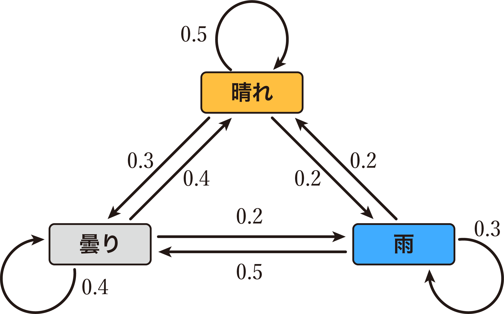
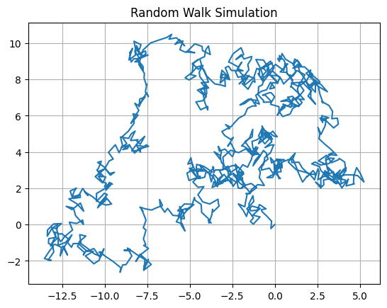

(1) 確率モデル
サイコロの出目のシミュレーション
プログラム
サイコロを$n$回振って、出た目の回数を棒グラフで示すプログラムを書いてみましょう。
はじめはn = 6000でプログラムを書き、実行してみます。
import matplotlib.pyplot as plt
import japanize_matplotlib
import random
# 初期条件
n = 6000 # サイコロを投げる数
# グラフ用の配列の準備
dice = [1, 2, 3, 4, 5, 6] # サイコロの目の番号
counts = [0, 0, 0, 0, 0, 0] # サイコロの目の回数を保存するリストを初期化
# シミュレーション（サイコロをn回投げて、出目の数を集計）
for i in range(n):
roll = random.randint(1, 6) # サイコロの出目（1〜6の乱数を発生）
counts[roll - 1] = counts[roll - 1] + 1 # 出目を集計
# グラフの表示
plt.bar(dice, counts, tick_label=dice) # 横軸にサイコロの目，縦軸に出目の回数，tick_labelは横軸のラベル
plt.xlabel("出目")
plt.ylabel("回数")
plt.title("サイコロのシミュレーション (n = " + str(n) + ")")
# 各棒の上に回数を表示
for i in range(6):
plt.text(i + 1, counts[i], str(counts[i]), ha="center", va="bottom") # 横 i+1, 縦 counts[i] のところに、counts[i]の値を表示
plt.show()

試行回数と結果の関係
試行回数を6000，60000，600000，6000000回と増やしていって実行してみましょう。
- n=60の実行結果

- n=600の実行結果

- n=6000の実行結果

- n=60000の実行結果

- n=600000の実行結果

- n=6000000の実行結果

このように、試行回数が多くなればなるほど、理論値に近づいていくことがわかります。
試行回数と出目の平均値の関係
試行回数$n$とサイコロの出目の平均値の関係を表すために、次のようなプログラムを実行してみましょう。
$n$が大きくなるにしたがって、理論値である3.5に近づいていく様子をシミュレーションすることができます。
このように、試行回数が多くなるほど理論値に近づく法則を大数の法則といいます。
import matplotlib.pyplot as plt
import japanize_matplotlib
import random
# 初期条件
trials = list(range(1, 6001)) # 試行回数の配列 [1, 2, 3, 4, ..., 6000]
# グラフ用の配列の準備
means = [] # 各試行回数における平均値を保存する配列
for n in trials:
total = 0 # サイコロの出目の合計値
# シミュレーション（サイコロをn回投げて、出目の数を集計）
for i in range(n):
roll = random.randint(1, 6) # サイコロの出目（1〜6の乱数を発生）
total = total + roll # 出目を集計
mean = total / n # 出目の合計を試行回数で割って平均値を求める
means.append(mean) # 試行回数ごとの平均値を配列meansに保存
# グラフの表示
plt.plot(trials, means, label="試行回数ごとの平均値")
plt.xlabel("試行回数")
plt.ylabel("出目の平均値")
plt.title("試行回数とサイコロの出目の平均値")
plt.axhline(3.5, ls="--", c="red", label="理論値 3.5") # 平均値の理論値である3.5のところに線を引く
plt.legend()
plt.grid()
plt.show()
(2) 天気のシミュレーション
次の図は、ある地域のある時期の日単位の天気の移り変わりを示したもので、数値は翌日の天気の変化の確率を表しています（このような図を状態遷移図といいます）。

1日目の天気が「晴れ」として、30日間の天気がどのように変化するか、また、各天気の種類の日が何日間あるかを棒グラフで示しなさい。ただし、天気は、「晴れ」「曇り」「雨」の3種類とし、その天気が1日中続くものとします。
import matplotlib.pyplot as plt # matplotlib: グラフを表示するためのライブラリ
import japanize_matplotlib # japanize_matplotlib: matplotlibを日本語化するためのライブラリ
import random
# 天気の種類をリストで表す
weather_type = ["晴れ", "曇り", "雨"]
weather_counts = [0, 0, 0] # 各天気の日数を数えるリスト（[晴れの日数, 曇りの日数, 雨の日数]）
# 遷移確率行列（0: 晴れ, 1: 曇り, 2: 雨）
transition_probs = [
[0.5, 0.3, 0.2], # 0: 晴れ -> [晴れ, 曇り, 雨]
[0.4, 0.4, 0.2], # 1: 曇り -> [晴れ, 曇り, 雨]
[0.2, 0.5, 0.3] # 2: 雨 -> [晴れ, 曇り, 雨]
]
# 初期設定
days = 30 # シミュレーション日数
weather = [0] # 各日の天気を 0: 晴れ, 1: 曇り, 2: 雨 で格納するリスト（初日の天気 0: 晴れ）
# 天気予測シミュレーション
for i in range(1, days):
probs = transition_probs[weather[len(weather) - 1]] # 翌日の天気の確率のリストを取得。weather[len(weather) - 1]でweatherの末尾の値を取得。
r = random.random() # 乱数を発生させる
if r < probs[0]: # 乱数が晴れの確率未満の場合、翌日は晴れ
next_weather = 0
elif r < probs[0] + probs[1]: # 乱数が(晴れ＋曇り)の確率未満の場合、翌日は曇り（晴れは上記if文で除外されている）
next_weather = 1
else: # 乱数が上記以外の場合、翌日は雨
next_weather = 2
weather.append(next_weather) # weatherリストに翌日の天気を代入
# 各天気の回数をカウント
for i in range(len(weather_type)):
weather_counts[i] = weather.count(i)
# 天気の回数プロット（棒グラフ）
plt.bar(weather_type, weather_counts, color=["#FFBF40", "#888888", "#40ACFF"])
plt.xlabel("天気")
plt.ylabel("回数")
plt.title("各天気の出現回数")
plt.show()
# 数値データを文字列の天気に変換して表示
for i in range(len(weather)):
print(i + 1, "日目:", weather_type[weather[i]])
for i in range(len(weather_type)):
print(weather_type[i], ":", weather_counts[i], end="\t")
print()

1 日目: 晴れ
2 日目: 晴れ
3 日目: 曇り
（略）
29 日目: 晴れ
30 日目: 晴れ
晴れ : 15 曇り : 10 雨 : 5
(3) モンテカルロ法を用いた円周率の近似計算
モンテカルロ法とは
確率モデルを使ったシミュレーション手法に、モンテカルロ法があります。モンテカルロ法は、対象のモデルに乱数を大量に生成して入力し、近似解を求める手法です。
円周率の近似計算
平面の第１象限部分に$x$方向に1，$y$方向に1の長さをもつ正方形内に、ランダムに点を打ちます。その点のうち、半径1，中心座標(0, 0)の単位円（$r^2 = x^2 + y^2$）の第１象限部分の範囲に含まれた点の数と、すべての点の数との割合は、点の数が多ければ多いほど、円の第１象限部分の面積（$\pi / 4$）に近づいてきます。
次のコードは、点の様子がわかるように、円の中に入った点と円の外の点を色を変えて散布図を作成するプログラムです。
import matplotlib.pyplot as plt # matplotlib: グラフを表示するためのライブラリ
import japanize_matplotlib # japanize_matplotlib: matplotlibを日本語化するためのライブラリ
import random
n = 5000 # 試行回数
cnt = 0 # 円の中に入った点の数
x1 = []
x2 = []
y1 = []
y2 = []
for i in range(n):
x = random.random()
y = random.random()
if x**2 + y**2 < 1.0:
x1.append(x)
y1.append(y)
cnt = cnt + 1
else:
x2.append(x)
y2.append(y)
plt.figure(figsize=(6, 6)) # グラフのサイズを設定
plt.scatter(x1, y1, color="red", s=1, label="円の内側")
plt.scatter(x2, y2, color="blue", s=1, label="円の外側")
plt.title("モンテカルロ法による円周率のシミュレーション") # グラフのタイトル
plt.xlim(0,1)
plt.ylim(0,1)
plt.grid(True)
plt.legend(loc="lower left")
plt.show()
print("n =", n)
print("cnt =", cnt)
print("π =", cnt / n * 4)
n = 5000
cnt = 3926
π = 3.1408
プログラムを何度か実行すると、毎回結果が異なることがわかります。また、試行回数を増やして実行してみましょう。試行回数が多くなれば、結果はより円周率に近づくことがわかります。
(4) ランダムウォークのシミュレーション
ランダムウォークとは
株価の変動やブラウン運動など、不確実な現象のシミュレーションとして用いられるモデルに、ランダムウォークがあります。ランダムウォークは、ある点から出発し、ある距離だけまっすぐに動くが、向きはランダムな運動を繰り返すようなモデルです。
株価の変動シミュレーション①
初期株価を100として、50日間のシミュレーションを行います。各日の株価変動は±1〜3 %のランダムな変動率で計算します。
import random
import matplotlib.pyplot as plt
# 初期設定
initial_price = 100 # 初期株価
days = 50 # 変動させる日数
price_changes = [] # 株価変動の履歴
# 初期株価をリストに追加
price_changes.append(initial_price)
# シミュレーション開始
current_price = initial_price
for i in range(days):
# 1〜3%のランダムな増減
change_rate = random.uniform(-0.03, 0.03) # -3%～+3%のランダムな変動
current_price = current_price * (1 + change_rate)
price_changes.append(current_price)
# グラフの表示
plt.plot(range(days + 1), price_changes, marker="o")
plt.xlabel("Day")
plt.ylabel("Stock Price")
plt.title("Stock Price Simulation")
plt.grid(True)
plt.show()
random.uniform(a, b)はa〜bの間の乱数を発生させる関数です。
株価の変動シミュレーション②
株価の変動シミュレーション①より実際の相場に近い挙動になるように改良したモデルです。
- トレンド要素
- 価格が上昇または下降しやすいようにバイアスを加えます。変数trendの値を調整することで、全体的な上昇または下降傾向を設定します。例えば、trend = 0.002だと、株価はわずかに上昇傾向にあります（下降傾向のときには負数を指定します）。
- ボラティリティの変動
- 変動率（ボラティリティ）が日によって変わるため、価格の振れ幅が大きくなる日や小さくなる日が発生します。random.uniform(0.01, 0.05)により、日ごとに異なる変動幅を設定しています。このランダムなボラティリティによって、安定した日や大きく変動する日が生じます。
- random.uniform(a, b)はa〜bの間の乱数を発生させる関数です。
- 株価の1日の変動率
- トレンドやボラティリティから1日の変動率を計算します。random.gauss(0, daily_volatility)で日ごとのランダムな変動を、daily_volatilityを標準偏差とした正規分布にしたがう乱数で表すことにより、価格が特定の傾向に従いながらも、ランダムに上がったり下がったりします。
- random.gauss(mu, sigma)は、平均値muと標準偏差sigmaの正規分布に基づいた乱数を発生させる関数です。
import random
import matplotlib.pyplot as plt
# 初期設定
initial_price = 100 # 初期株価
days = 100 # シミュレーションする日数
trend = 0.002 # 上昇のトレンド要素（正の値で上昇、負の値で下降）
price_changes = [initial_price]
# シミュレーション開始
current_price = initial_price
for i in range(days):
# 日ごとにボラティリティをランダムに設定（例: 1%から5%）
daily_volatility = random.uniform(0.01, 0.05)
# トレンド + ランダムな変動（ボラティリティに基づく）
change_rate = trend + random.gauss(0, daily_volatility) # 正規分布に基づく変動
# 株価の更新
current_price = current_price * (1 + change_rate)
price_changes.append(current_price)
# グラフの表示
plt.plot(range(days + 1), price_changes, marker="o", markersize=2, linestyle="-")
plt.xlabel("Day")
plt.ylabel("Stock Price")
plt.title("Stock Price Simulation")
plt.grid(True)
plt.show()
ブラウン運動のシミュレーション
液体や気体中の微小な粒子が見せる不規則かつランダムな動きのことをブラウン運動といいます。次の例では、初期座標(0, 0)にあった粒子が、どのように移動するかをシミュレーションしています。
import random
import matplotlib.pyplot as plt
# 移動回数
n = 1000
# 座標の初期化
x = [0]
y = [0]
# ランダムウォークのシミュレーション
for i in range(n):
x.append(x[i] + random.random() - 0.5)
y.append(y[i] + random.random() - 0.5)
# シミュレーションの結果をプロット
plt.plot(x, y)
plt.title("Random Walk Simulation")
plt.grid(True)
plt.show()
